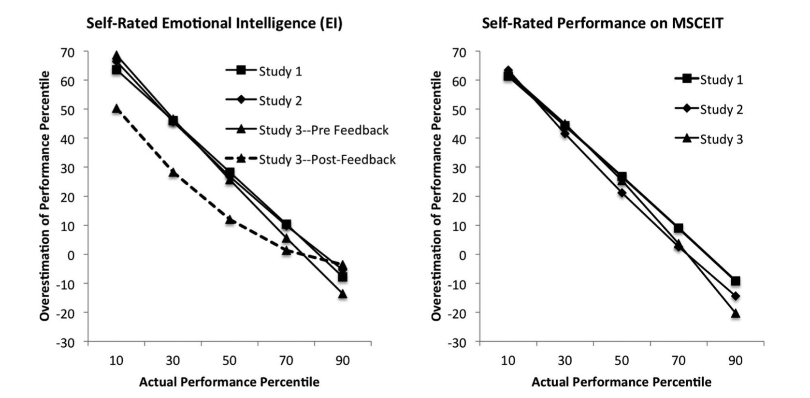
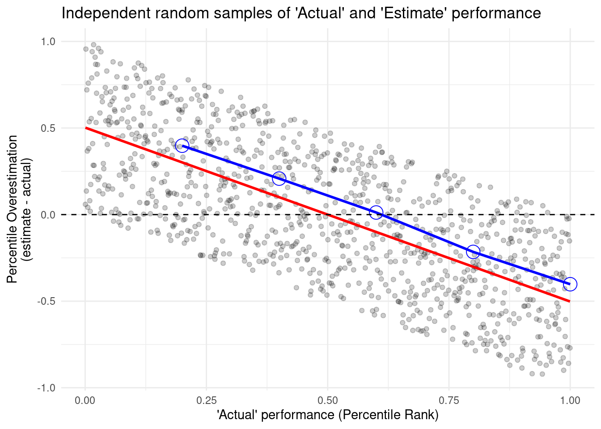

Note: I originally wrote this in February 2019. Also, don’t hate me for putting some links to Wikipedia, you were going to go there anyway. This isn’t a research paper.
Introduction
In my Organization Psychology graduate class at West Chester University, one of our assigned readings (among others) for our week on emotions and moods was (Sheldon, Dunning, and Ames 2014). This article focused on another finding relating to the Dunning-Kruger effect in the workplace. This time, in a task related to emotional intelligence (EI). During the time I remember vaguely hearing somewhere I will never recall, some mathematical issues relating to this well-known psychological phenomenon mentioned in many introductory text books.
The Dunning-Kruger effect is founding on the concept that an individual that lacks expertise will be more confident in their abilities than they really are, or overestimate their performance on a task. Yet experts may underestimate their own performance or abilities or be more accurate in their estimations. One thing we can derive from this is possibly that those with lower skill will overestimate their abilities while those more skilled will underestimate their abilities.
The following is in direct relation to an article by (Sheldon, Dunning, and Ames 2014). They report a significant relationship between an individual’s actual performance and the difference between their perceived ability and actual performance in three conditions (\(r_1 = -0.83\), \(p_1 < .001\); \(r_2 = -0.87\), \(p_2 < .001\); \(r_3 = -0.84\), \(p_3 < .001\)).
They also used these two graphs to representing their findings:

Figure 1. Overestimation of emotional intelligence (left panel) and performance on the Mayer-Salovey-Caruso Emotional Intelligence Test (MSCEIT; right panel) as a function of actual performance on the MSCEIT
We’ll go through and understand why this can be misleading and how to replicate the Dunning-Kruger effect with random data. Yes, random data. Data that are random.
Set up
So let’s place with some data and see what we get. First, let’s setup our .Rmd file and choose a specific randomization seed so we can come back to our results (Douglas 1989):
Code
set.seed(42)options(tidyverse.quiet =TRUE) ## silences warningslibrary(tidyverse)library(mark) ## percentile_rank() | github.com/jmbarbone/mark#> #> Attaching package: 'mark'#> The following object is masked from 'package:purrr':#> #> nonelibrary(broom) ## tidying statistical outputs into tablestheme_set(theme_minimal())
Code
f_nbins <-function(x, n =6) { dplyr::ntile(x, n) / n}
Random data
We’ll start by creating a data frame with two vectors of independent, random data. These will be our randomly assigned percentile ranks of actual and estimate’d performance.
To clarify, the calculation of percentile rank is as follows:
Where \(c_\ell\) is the count of scores lower than the score of interest, \(f_i\) is the frequency of the score of interest, and \(N\) is the total number of scores. With this formula, our percentile ranks will always be 0 < \(PR_i\) < 100.
ggplot(random_data, aes(x = actual, y = estimate - actual)) +geom_point(alpha = .2) +geom_smooth(formula ="y ~ x", method = lm, se =FALSE, col ="red") +geom_point(data = bins, aes(x = bin, y = mean), col ="blue", shape =1, size =5) +geom_line( data = bins, aes(x = bin, y = mean), col ="blue", size =1) +geom_hline(yintercept =0, linetype =2) +labs(title ="Independent random samples of 'Actual' and 'Estimate' performance",x ="'Actual' performance (Percentile Rank)",y ="Percentile Overestimation\n(estimate - actual)" )

Already we’re seeing a trend very similar to that reported in the article. What we also notice is that there are bounds to the overestimation value as a factor of the individual’s actual performance. An individual that performs at the 99th percentile cannot overestimate their own performance (but can be accurate) - much like an individual in the lower percentiles would unlikely underestimate. These is additionally worse by the use of a score derived in reference to others.
Adjusting random data
So now we’re going to take some data and use some rough estimates for means. We’ll use the results from the study of interest. So simplicity, I’ll just use the rough means of the n, means, and sd reported from the first two studies.
We’ll shape our normal distributions around the values found in the paper. These values, to be clear, are the percentile ranks either estimated from the participant or the actual ones as they compare to percentile ranking among U.S. adults in EI. As such, we won’t need to use the percentile_rank() again.
Let’s also take a look at the correlations we have. As expected, we have no correlation with random data. The article reported correlations of .20 and .19 between estimated and actual performance. Clearly, people are not that great at estimating their own performance.
Code
cor.test(~ actual + estimate, data = adj_random)#> #> Pearson's product-moment correlation#> #> data: actual and estimate#> t = 1.3, df = 159, p-value = 0.1955#> alternative hypothesis: true correlation is not equal to 0#> 95 percent confidence interval:#> -0.05296245 0.25321085#> sample estimates:#> cor #> 0.1025525
Well, no surprise that that our correlations are a weaker and less statistically significant, we’re using random data after all.
Now we’re going to run a correlation on the actual scores and the difference between the estimated and actual performance.
Code
cor_test_result <-cor.test(~ actual + difference, data = adj_random)cor_test_result#> #> Pearson's product-moment correlation#> #> data: actual and difference#> t = 21.717, df = 159, p-value < 2.2e-16#> alternative hypothesis: true correlation is not equal to 0#> 95 percent confidence interval:#> 0.8197724 0.8991906#> sample estimates:#> cor #> 0.8647931
Now, look at that. We have found an even more significant, negative correlation. This is roughly similar to those reported by in this article. This is with data that has absolutely no relationship between the two variables, as we have justed established.
So why is this?
Plotting adjusted random data
Let’s graph out our results with a little more care this time.
When we calculated a correlation with the mean estimates we actually got a significant result from a few of our runs. If fact, about 5% or less are statistically significant… Let’s pull that one out to look at it again.
Code
significant_ids <- x %>%filter(p.value < .05) %>%pull(id) %>%as.character()temp <- sev_bins %>%filter(id %in% significant_ids)sev_random %>%filter(id %in% significant_ids) %>%ggplot(aes(x = actual, y = estimate, group =factor(id), color =factor(id))) +geom_point(alpha = .2) +geom_point(data = temp, aes(x = bin, y = mean_est)) +geom_line(data = temp, aes(x = bin, y = mean_est))
So there you have it. A successful replication of this ‘effect’ with random data.
But why is this? This is partly because individuals at the lowest quantiles will have a greater likelihood of over-estimating their performance and those at the highest quantiles will underestimate. An individual that performs at the 99th quantile will have almost no choice but to estimate their performance to be below that of reality (see also (Nuhfer et al. 2016)). This seems to be further worsened by the bound nature of the scores. Were these scores and estimates to be something not bound in such a way (for instance the speed in which an individual could complete an assessment) examning the relationship between actual and estimate performance could yield more valid results. These graphical representations and analyses should be cautioned as they are not very meaningful to understanding their effects.
References
Douglas, Adams. 1989. The Hitchhiker’s Guide to the Galaxy. New York: Harmony Books.
Nuhfer, Edward, Christopher Cogan, Steven Fleisher, Eric Gaze, and Karl Wirth. 2016. “Random Number Simulations Reveal How Random Noise Affects the Measurements and Graphical Portrayals of Self-Assessed Competency.”Numeracy: Advancing Education in Quantitative Literacy 9 (1). https://doi.org/10.5038/1936-4660.9.1.4.
Sheldon, Oliver J, David Dunning, and Daniel R Ames. 2014. “Emotionally Unskilled, Unaware, and Uninterested in Learning More: Reactions to Feedback about Deficits in Emotional Intelligence.”Journal of Applied Psychology 99 (1): 125. https://doi.org/10.1037/a0034138.
Source Code
---title: "Dunning-Kruger effect"subtitle: "A case of itself?"date: "2020-05-05"updated: "2022-07-09"bibliography: "references.bib"categories: ["R", "psychology", "datavis"]---> Note: I originally wrote this in February 2019.Also, don't hate me for putting some links to Wikipedia, you were going to go there anyway.This isn't a research paper.## IntroductionIn my Organization Psychology graduate class at West Chester University, one of our assigned readings (among others) for our week on emotions and moods was [@sheldon2014emotionally].This article focused on another finding relating to the [Dunning-Kruger effect](https://en.wikipedia.org/wiki/Dunning%E2%80%93Kruger_effect) in the workplace.This time, in a task related to [emotional intelligence (EI)](https://en.wikipedia.org/wiki/Emotional_intelligence).During the time I remember vaguely hearing somewhere I will never recall, some mathematical issues relating to this well-known psychological phenomenon mentioned in many introductory text books.The Dunning-Kruger effect is founding on the concept that an individual that lacks expertise will be more confident in their abilities than they really are, or overestimate their performance on a task.Yet experts may underestimate their own performance or abilities or be more accurate in their estimations.One thing we can derive from this is possibly that those with lower skill will overestimate their abilities while those more skilled will underestimate their abilities.The following is in direct relation to an article by [@sheldon2014emotionally].They report a significant relationship between an individual's actual performance and the difference between their perceived ability and actual performance in three conditions ($r_1 = -0.83$, $p_1 < .001$; $r_2 = -0.87$, $p_2 < .001$; $r_3 = -0.84$, $p_3 < .001$).They also used these two graphs to representing their findings:We'll go through and understand why this can be misleading and how to replicate the Dunning-Kruger effect **with random data**.Yes, _random data_.Data that are random.## Set upSo let's place with some data and see what we get.First, let's setup our `.Rmd` file and choose a specific randomization seed so we can come back to our results [@adams1979hitchhikers]:```{r setup}#| include: falseoptions(dplyr.summarise.inform = FALSE) # removes warning for `summarise()```````{r packages}set.seed(42)options(tidyverse.quiet = TRUE) ## silences warningslibrary(tidyverse)library(mark) ## percentile_rank() | github.com/jmbarbone/marklibrary(broom) ## tidying statistical outputs into tablestheme_set(theme_minimal())``````{r functions}f_nbins <- function(x, n = 6) { dplyr::ntile(x, n) / n}```## Random dataWe'll start by creating a data frame with two vectors of independent, random data.These will be our randomly assigned percentile ranks of `actual` and `estimate`'d performance.To clarify, the calculation of [percentile rank](https://github.com/jmbarbone/mark/blob/main/R/percentile-rank.R) is as follows:$$\text{PR}_i = \frac{c_\ell + 0.5 f_i}{N} \times 100%$$Where $c_\ell$ is the count of scores lower than the score of interest, $f_i$ is the frequency of the score of interest, and $N$ is the total number of scores.With this formula, our percentile ranks will always be 0 < $PR_i$ < 100.```{r random-data-1}random_data <- tibble( actual = rnorm(1000), estimate = rnorm(1000) ) %>% mutate(across(everything(), percentile_rank))random_data```We also want to bin our data together just like in the article.```{r random-data-2}bins <- random_data %>% mutate( difference = estimate - actual, bin = f_nbins(actual, 5) ) %>% group_by(bin) %>% summarise( n = n(), mean = mean(difference) )bins```Now we'll plot the data and take a look at this.```{r random-plot}ggplot(random_data, aes(x = actual, y = estimate - actual)) + geom_point(alpha = .2) + geom_smooth(formula = "y ~ x", method = lm, se = FALSE, col = "red") + geom_point(data = bins, aes(x = bin, y = mean), col = "blue", shape = 1, size = 5) + geom_line( data = bins, aes(x = bin, y = mean), col = "blue", size = 1) + geom_hline(yintercept = 0, linetype = 2) + labs( title = "Independent random samples of 'Actual' and 'Estimate' performance", x = "'Actual' performance (Percentile Rank)", y = "Percentile Overestimation\n(estimate - actual)" )```Already we're seeing a trend very similar to that reported in the article.What we also notice is that there are bounds to the overestimation value as a factor of the individual's actual performance.An individual that performs at the 99th percentile cannot overestimate their own performance (but can be accurate) - much like an individual in the lower percentiles would unlikely underestimate.These is additionally worse by the use of a score derived in reference to others.```{r cor testing}#| include: falsex <- rnorm(1e3) pr_x <- percent_rank(x)y <- rnorm(1e3)pr_y <- percent_rank(y)par(mfrow = c(1, 2))plot(x, y - x)plot(pr_x, pr_y - pr_x)par(mfrow = c(1, 1))cor.test(x, y - x)cor.test(x, y - x, method = "s", exact = FALSE)cor.test(pr_x, pr_y - pr_x, method = "s", exact = FALSE)```## Adjusting random dataSo now we're going to take some data and use some rough estimates for means.We'll use the results from the study of interest.So simplicity, I'll just use the rough means of the n, means, and sd reported from the first two studies.We'll shape our normal distributions around the values found in the paper.These values, to be clear, are the percentile ranks either estimated from the participant or the actual ones as they compare to percentile ranking among U.S. adults in EI.As such, we won't need to use the `percentile_rank()` again.<!-- What? SD of a uniform is like .28 -- what are these numbers? --><!-- Are they reporting out on the average percentile ranks? -->```{r adj-random-1}adj_random <- tibble( actual = rnorm(161, 42.2, sd = 25.1) / 100, estimate = rnorm(161, 77.5, sd = 13.1) / 100, difference = actual - estimate, bin = f_nbins(actual, 5))adj_bins <- adj_random %>% group_by(bin) %>% summarise( n = n(), mean = mean(difference) )```Let's also take a look at the correlations we have.As expected, we have no correlation with random data.The article reported correlations of `.20` and `.19` between estimated and actual performance.Clearly, people are not that great at estimating their own performance.```{r}cor.test(~ actual + estimate, data = adj_random)```Well, no surprise that that our correlations are a weaker and less statistically significant, we're using random data after all.Now we're going to run a correlation on the `actual` scores and the difference between the `estimated` and `actual` performance. ```{r adj-random-3}cor_test_result <- cor.test(~ actual + difference, data = adj_random)cor_test_result```Now, look at that.We have found an even more significant, negative correlation.This is roughly similar to those reported by in this article.This is with data that has absolutely no relationship between the two variables, as we have justed established.So why is this?## Plotting adjusted random dataLet's graph out our results with a little more care this time.```{r adj-plot}ggplot(adj_random, aes(x = actual, y = difference)) + geom_hline(yintercept = 0, linetype = 2) + geom_point(alpha = .1) + geom_smooth( formula = "y ~ x", method = "lm", se = FALSE, col = "red" ) + geom_point( data = adj_bins, aes(x = bin, y = mean), col = "blue", shape = 1, size = 5 ) + geom_line( data = adj_bins, aes(x = bin, y = mean), col = "blue", size = 1 ) + labs( title = "Randomly generated differences in 'actual' vs 'estimated' performance", subtitle = "Estimate: M = 75, SD = 15; Actual: M = 5, SD = 25", x = "Actual performance", y = "Estimated - Actual performance" ) + annotate( geom = "text", label = glue::glue_data(cor_test_result, "r = {round(estimate, 3)}, p = {format(p.value)}"), x = .65, y = .50, hjust = "left" )```## More random dataSo what if we repeated this several times?```{r}random_helper <-function(x) {set.seed(42+ x)tibble(actual =rnorm(161, 42.2, sd =25.1) /100,estimate =rnorm(161, 77.5, sd =13.1) /100, ) %>%mutate(across(everything(), percentile_rank))}sev_random <-as.list(seq(100)) %>%map(random_helper) %>%bind_rows(.id ="id") %>%mutate(id =as.numeric(id))sev_bins <- sev_random %>%group_by(id) %>%mutate(difference = estimate - actual,bin =f_nbins(actual, 5) ) %>%group_by(id, bin) %>%summarise(n =n(),mean_est =mean(estimate),mean_diff =mean(difference) )ggplot(sev_bins, aes(x = bin, y = mean_est, col =factor(id))) +geom_point() +geom_line() +# scale_color_discrete(name = "Randomization") +scale_color_discrete(guide =FALSE) +scale_y_continuous(limits =c(0, 1)) +labs(x ="Actual", y ="Estimate")```So what if we actually run a correlation on these numbers?We'll create a nested function and install the `broom` package to help tidy up our results. ```{r}run_correlations <-function(x, item_x, item_y) { corr_helper <-function(x, item_x, item_y) { formula <-str_c("~", item_x, "+", item_y, sep =" ")cor.test(eval(parse(text = formula)), data = x) } x %>%nest(data =-id) %>%mutate(corr =map(data, corr_helper, item_x, item_y),tidy =map(corr, tidy) ) %>%unnest(tidy) %>%select(where(negate(is.list)))}(x <-run_correlations(sev_random, "actual", "estimate") %>%arrange(p.value))(y <-run_correlations(sev_bins, "bin", "mean_est") %>%arrange(p.value))mean(x$p.value < .05)mean(y$p.value < .05)```When we calculated a correlation with the mean estimates we actually got a significant result from a few of our runs.If fact, about 5% or less are statistically significant...Let's pull that one out to look at it again.```{r}significant_ids <- x %>%filter(p.value < .05) %>%pull(id) %>%as.character()temp <- sev_bins %>%filter(id %in% significant_ids)sev_random %>%filter(id %in% significant_ids) %>%ggplot(aes(x = actual, y = estimate, group =factor(id), color =factor(id))) +geom_point(alpha = .2) +geom_point(data = temp, aes(x = bin, y = mean_est)) +geom_line(data = temp, aes(x = bin, y = mean_est))```So there you have it.A successful replication of this 'effect' with random data.But why is this?This is partly because individuals at the lowest quantiles will have a greater likelihood of over-estimating their performance and those at the highest quantiles will underestimate.An individual that performs at the 99th quantile will have almost no choice but to estimate their performance to be below that of reality (see also [@nuhfer2016random]). This seems to be further worsened by the bound nature of the scores.Were these scores and estimates to be something not bound in such a way (for instance the speed in which an individual could complete an assessment) examning the relationship between actual and estimate performance could yield more valid results.These graphical representations and analyses should be cautioned as they are not very meaningful to understanding their effects.# References